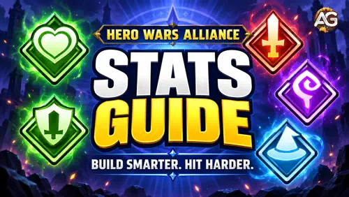

Gastas los recursos que has ahorrado, el Poder de tu héroe aumenta y vuelves a la misma batalla esperando un resultado diferente. Entonces, tu héroe de daño apenas araña al tanque. O tu propio tanque desaparece antes de que tu sanador pueda actuar. Eso es frustrante, especialmente cuando la mejora parecía acertada en la pantalla.
Soy Alexandre, y mi consejo es empezar por lo que ocurrió en el combate. Una mejora útil resuelve un problema concreto. Un héroe que muere antes de lanzar una habilidad necesita algo diferente de un héroe que sobrevive cómodamente, pero no puede rematar a un enemigo.
Aquí te explicaré los tres atributos principales y los 14 atributos secundarios de Hero Wars Alliance. Usaremos ejemplos pequeños y claros antes de ver las fórmulas. No necesitas memorizar los cálculos. Quiero que entiendas qué estás comprando con tu próxima mejora.

Por qué más Poder no garantiza una victoria
Uso el Poder como una visión general rápida del desarrollo. No puede decirme si mi héroe de daño puede atravesar la Armadura de este rival, si mi tanque tiene la defensa adecuada o si un efecto de control interrumpirá mi habilidad importante.
Imagina dos mejoras para un héroe que lucha contra un equipo de daño físico: una añade Defensa Mágica y la otra añade Armadura. Ambas desarrollan al héroe, pero la Armadura responde al daño de este ejemplo. Contra un equipo mágico, la decisión cambia. El rival da contexto a un atributo.
Mi primera pregunta: «¿Qué impide que este héroe cumpla su función?». Observa quién muere primero, qué ataque le hace daño y si tu habilidad principal llega a activarse. Esas observaciones son más útiles que elegir la mejora que añada la mayor cantidad de Poder.
Atributos principales: las bonificaciones detrás de las bonificaciones
Un héroe tiene Fuerza, Inteligencia y Agilidad, pero solo uno de ellos es su atributo principal. Los tres pueden aportar beneficios. La designación de atributo principal añade un punto extra de Ataque Físico por cada punto de ese atributo concreto.
| Atributo | Siempre otorga | Extra si es el atributo principal del héroe |
|---|---|---|
| Fuerza | 40 de Salud | 1 de Ataque Físico |
| Inteligencia | 3 de Ataque Mágico + 1 de Defensa Mágica | 1 de Ataque Físico |
| Agilidad | 2 de Ataque Físico + 1 de Armadura | 1 más de Ataque Físico, para un total de 3 |
 Fuerza: una reserva de Salud mayor
Fuerza: una reserva de Salud mayor
100 puntos adicionales de Fuerza otorgan 4.000 de Salud. Si Fuerza es el atributo principal de ese héroe, también otorgan 100 de Ataque Físico. La Fuerza por sí misma no añade Armadura. Más Salud permite que el héroe soporte más daño; la Armadura reduce el daño físico recibido. Compararemos esas funciones en breve.
 Inteligencia: fuerza mágica y protección mágica
Inteligencia: fuerza mágica y protección mágica
100 puntos adicionales de Inteligencia otorgan 300 de Ataque Mágico y 100 de Defensa Mágica. Un héroe cuyo atributo principal es Inteligencia también recibe 100 de Ataque Físico. Me gusta esta combinación cuando importan tanto el escalado de las habilidades del héroe como su necesidad de protección mágica, pero sigo comparando la bonificación real y el coste en recursos con otras mejoras.
 Agilidad: comprueba si es el atributo principal
Agilidad: comprueba si es el atributo principal
100 puntos adicionales de Agilidad otorgan a cualquier héroe 200 de Ataque Físico y 100 de Armadura. Para un héroe cuyo atributo principal es Agilidad, la ganancia de Ataque Físico pasa a ser de 300. Esos 100 adicionales son la bonificación del atributo principal, no un cuarto atributo independiente.
Esto explica por qué examino de cerca las mejoras de Agilidad para héroes como Eva: una mejora ayuda tanto a la ofensiva física como a la defensa física. Eso no convierte automáticamente a la Agilidad en la mejor compra en cada etapa. Un problema concreto de penetración o supervivencia aún puede ser más urgente.
 Salud: dale a tu héroe tiempo para contribuir
Salud: dale a tu héroe tiempo para contribuir
La Salud es la cantidad de daño que tu héroe puede soportar antes de morir. Cuando llega a cero, el héroe muere. Es fácil de entender, pero la decisión de invertir en ella merece un poco más de reflexión.
Supongamos que un héroe tiene 100.000 de Salud y recibe golpes repetidos de 25.000 de daño después de las defensas. Sin curación ni otros efectos, cuatro golpes lo derrotan. Con 120.000 de Salud, sobrevive al cuarto golpe con 20.000 restantes. Ese margen adicional para actuar puede ser la diferencia entre lanzar una habilidad y no contribuir en nada.
Ahora supongamos que el héroe ya sobrevive hasta que termina el combate, pero tu equipo se queda sin tiempo. Más Salud puede no resolver esa derrota. Por eso mi consejo es conseguir suficiente supervivencia para cumplir la función y, después, examinar qué mejora la contribución del héroe.
Lee de quién es la Salud que utiliza la habilidad. Un escudo basado en la Salud de tu héroe puede crecer con sus mejoras de Salud. El daño basado en la Salud máxima del enemigo utiliza el valor del enemigo. Aumentar tu propia Salud no aumenta ese daño basado en un porcentaje.
Ataque: lee la habilidad antes de elegir la mejora
 Ataque Físico
Ataque Físico
El Ataque Físico contribuye al daño de los ataques básicos y de las habilidades que escalan con él. Después, el daño físico debe atravesar la Armadura del objetivo. Por tanto, el número de la pantalla de tu héroe no es una promesa de cuánta Salud eliminará cada golpe.
Considera una habilidad hipotética que inflige 50% del Ataque Físico + 2.000. Con 20.000 de Ataque Físico, su daño antes de las defensas es de 12.000. Añade 4.000 de Ataque Físico y la habilidad gana 2.000 de daño, hasta llegar a 14.000. La mejora se multiplica por el coeficiente del 50% de la habilidad; no se añade íntegramente.
 Ataque Mágico
Ataque Mágico
El Ataque Mágico fortalece las habilidades que lo utilizan, incluidos el daño mágico y otros efectos que escalan con Ataque Mágico. Una habilidad de curación o de escudo puede beneficiarse aunque no sea un ataque. Lee su descripción y su fórmula para ver exactamente qué mejora.
El atributo con el que escala una habilidad y el tipo de daño que inflige son cuestiones diferentes. Cornelius es un ejemplo útil: su habilidad definitiva inflige daño físico, pero escala con Ataque Mágico. Llamar a un héroe «físico» o «mágico» puede ocultar detalles como este.
Cómo leo una habilidad: primero compruebo su tipo de daño, luego el atributo de su fórmula y después el objetivo o el efecto. Eso me dice qué atributo de ataque aumenta la cifra y qué defensa enemiga la reducirá.
Defensa y penetración: por qué un golpe fuerte puede parecer débil
 La Armadura protege contra el daño físico
La Armadura protege contra el daño físico
La Armadura reduce el daño físico de ataques y habilidades. Con 3.000 de Armadura todavía efectiva tras la penetración, un golpe físico de 10.000 de daño pasa a infligir 5.000. Con 1.000 de Armadura efectiva, ese mismo golpe pasa a infligir 7.500.
 La Defensa Mágica protege contra el daño mágico
La Defensa Mágica protege contra el daño mágico
La Defensa Mágica sigue el mismo cálculo para el daño mágico. No sustituye a la Armadura contra ataques físicos. El daño puro es un tipo de daño independiente; la Armadura y la Defensa Mágica no son las defensas que se deben usar para ese cálculo.
| Defensa efectiva | Daño reducido | Daño recibido |
|---|---|---|
| 0 | 0% | 10.000 |
| 1.000 | 25% | 7.500 |
| 3.000 | 50% | 5.000 |
| 6.000 | Aproximadamente un 66,7% | Aproximadamente 3.333 |
Defensa efectiva significa la defensa que queda después de aplicar la penetración correspondiente del atacante. Estos ejemplos aíslan ese cálculo: sin golpes críticos, escudos, Tenacidad ni otros modificadores.
Muéstrame la fórmula de defensa
Reducción de daño = 1 − 1 ÷ (1 + defensa efectiva ÷ 3.000).
El resultado es una fracción. Multiplícalo por 100 para expresarlo como porcentaje. Una forma equivalente de calcular el golpe es: daño recibido = daño antes de la defensa ÷ (1 + defensa efectiva ÷ 3.000).
 La Penetración de Armadura elimina Armadura del cálculo
La Penetración de Armadura elimina Armadura del cálculo
Cada punto de Penetración de Armadura ignora un punto de la Armadura del objetivo. Contra 8.000 de Armadura, 6.000 de penetración dejan 2.000 de Armadura efectiva. Entonces, un golpe físico de 10.000 de daño inflige 6.000 de daño, antes de otros efectos.
Sin penetración, ese golpe contra 8.000 de Armadura solo infligiría unos 2.727 de daño. Por eso un atacante puede parecer mucho más fuerte tras una mejora de penetración, aunque su Ataque Físico no cambie.
 La Penetración Mágica cumple la misma función contra la Defensa Mágica
La Penetración Mágica cumple la misma función contra la Defensa Mágica
Resta la Penetración Mágica de la Defensa Mágica del objetivo y después calcula el daño mágico usando la defensa restante. La penetración física y la mágica no son intercambiables.
La defensa efectiva se detiene en cero. Con 10.000 de penetración contra 5.000 de la defensa correspondiente, el resultado es cero, no menos 5.000. La penetración sobrante no genera daño adicional mediante una defensa negativa. Aun así, puede ayudar contra otro rival con una defensa mayor.
Mi recomendación: si un héroe de daño sobrevive, pero tiene dificultades contra un objetivo resistente, examina la penetración correspondiente antes de comprar más ataque. Si la defensa efectiva de ese objetivo ya es cero, más penetración no mejorará esta parte del golpe.
Pruébalo: ¿adónde fue mi daño?
Usa Armadura con Penetración de Armadura para un golpe físico, o Defensa Mágica con Penetración Mágica para un golpe mágico. «Daño antes de la defensa» es el resultado de la fórmula del ataque o de la habilidad, no necesariamente el atributo de Ataque de tu héroe.
Esto aísla la defensa y la penetración. No es un simulador completo de batalla y no incluye otras habilidades, golpes críticos ni modificadores de daño.
Atributos de probabilidad: un valor no es un porcentaje
Esta es una de las distinciones más útiles del juego. 10.000 de Probabilidad de Golpe Crítico no significan 10.000%, 100% ni siquiera la misma probabilidad contra todos los enemigos. El cálculo compara el atributo pertinente con el atributo principal del rival.
Para estos cálculos de probabilidad: tu atributo pertinente ÷ (tu atributo pertinente + atributo principal del rival) × 100. Si ambas cifras son 10.000, el resultado es del 50%. Si tu valor se mantiene en 10.000, pero el atributo principal del rival es de 20.000, pasa a ser de aproximadamente un 33,3%.
Usa el valor del verdadero atributo principal del rival, no su Poder ni la suma de Fuerza, Inteligencia y Agilidad. Para un rival cuyo atributo principal es Fuerza, eso significa usar su valor de Fuerza.
 Esquiva: una oportunidad de evitar el daño físico
Esquiva: una oportunidad de evitar el daño físico
La Esquiva se compara con el atributo principal del atacante. Con 5.000 de Esquiva contra un atacante cuyo atributo principal es de 15.000, la probabilidad es del 25%. El héroe puede evitar por completo un golpe físico cuando la Esquiva tiene éxito, pero eso no es una reducción garantizada del 25% en cada golpe.
Lo que me preocupa de depender únicamente de la Esquiva es la constancia. El golpe que logra entrar aún puede hacer daño. La Salud y la defensa adecuada dan a un héroe frágil una alternativa cuando la suerte no acompaña. La Esquiva tampoco ofrece una respuesta general al daño mágico o puro.
 Probabilidad de Golpe Crítico: el doble de daño físico
Probabilidad de Golpe Crítico: el doble de daño físico
Un golpe crítico físico inflige 2× el daño. Un golpe de 10.000 pasa a infligir 20.000 por el multiplicador crítico, manteniendo iguales las demás condiciones. Tu Probabilidad de Golpe Crítico se compara con el atributo principal del objetivo.
Una probabilidad del 50% no significa que uno de cada dos golpes vaya a ser crítico. Pueden producirse varios golpes normales o varios golpes críticos seguidos. Valoro la probabilidad de crítico cuando el héroe ya tiene suficiente daño de base y penetración para que esos críticos acertados sean relevantes.
 Probabilidad de Golpe Crítico Mágico: un atributo diferente, un multiplicador mayor
Probabilidad de Golpe Crítico Mágico: un atributo diferente, un multiplicador mayor
Los golpes críticos mágicos infligen 2,5× el daño mágico. Un golpe mágico comparable de 10.000 de daño pasa a infligir 25.000 con ese multiplicador. La probabilidad utiliza la Probabilidad de Golpe Crítico Mágico y el atributo principal del objetivo.
La Probabilidad de Golpe Crítico normal no sustituye a este atributo. Del mismo modo, la versión mágica no hace que el daño físico o puro sea crítico. Comprueba qué daño inflige realmente el héroe antes de perseguir una bonificación crítica atractiva.
Convierte un valor de atributo en una probabilidad
Para los golpes críticos, introduce el valor de crítico del atacante y el atributo principal del defensor. Para Esquiva o Reflejo Mágico, introduce el valor del atributo del defensor y el atributo principal del atacante.
 Vampirismo: daño que te ayuda a seguir con vida
Vampirismo: daño que te ayuda a seguir con vida
El Vampirismo restaura una cantidad de Salud equivalente a un porcentaje del daño infligido por un ataque básico o una habilidad. Si el héroe inflige 10.000 de daño con un 10% de Vampirismo, la curación es de 1.000 de Salud.
Las palabras clave son daño infligido. Si las defensas reducen ese daño a 4.000, un 10% de Vampirismo produce 400 de curación. Por tanto, un mejor daño puede mejorar tanto la capacidad de mantenerse con vida como la ofensiva.
Veo el Vampirismo como un apoyo para un héroe que sigue atacando. No puede ser todo tu plan de supervivencia si el héroe muere antes de infligir daño, pasa el combate bajo efectos de control o no puede dañar lo suficiente al objetivo. Primero asegúrate de que el héroe tenga la oportunidad de usarlo.
La batalla con poca Salud: rematar enemigos y sobrevivir a la presión
Algunos combates cambian drásticamente cerca del final de una barra de Salud. Aplastamiento y Tenacidad actúan en esa parte de la batalla. Sus fórmulas se parecen a la fórmula de probabilidad, pero sus resultados describen cambios en el daño, no la probabilidad de un golpe crítico o de una esquiva.
 Aplastamiento: ayuda para rematar a un enemigo con menos del 50% de Salud
Aplastamiento: ayuda para rematar a un enemigo con menos del 50% de Salud
El Aplastamiento aumenta el daño infligido a enemigos cuya Salud está por debajo del 50%. Puede afectar al daño físico, mágico y puro, excluyendo el daño de las habilidades de los aliados.
El aumento es Aplastamiento ÷ (Aplastamiento + atributo principal del objetivo) × 100. Con 5.000 de Aplastamiento contra 15.000 de atributo principal, la bonificación es del 25% mientras se cumple la condición. Aislando esta bonificación, un golpe de 10.000 de daño pasa a infligir 12.500.
Mi motivo para considerar Aplastamiento es sencillo: el equipo deja a los enemigos con poca Salud, pero le cuesta rematarlos. No ofrece esa misma bonificación durante toda la barra de Salud del enemigo, así que no lo trataría como un sustituto incondicional del ataque o de la penetración.
 Tenacidad: reduce el daño recibido con menos del 50% de Salud
Tenacidad: reduce el daño recibido con menos del 50% de Salud
La Tenacidad reduce el daño físico, mágico y puro recibido cuando la Salud del propio héroe está por debajo del 50%. Se excluye el daño autoinfligido. Las entidades invocadas, como los esqueletos de Morrigan, tienen cero de Tenacidad por defecto.
La reducción es Tenacidad ÷ (Tenacidad + atributo principal del atacante) × 100. Con 5.000 de Tenacidad contra 15.000 de atributo principal, la reducción es del 25%. En un ejemplo que aísla la Tenacidad mientras está activa, 10.000 de daño recibido pasan a ser 7.500.
Mantén separadas las dos comprobaciones de Salud: Aplastamiento comprueba la Salud del enemigo; Tenacidad comprueba la Salud de tu héroe. Considero Tenacidad cuando un héroe necesita ayuda para seguir vivo en esa etapa vulnerable. No es una protección permanente con la Salud al máximo.
 Reflejo Mágico: a veces, el hechizo recibido vuelve a su origen
Reflejo Mágico: a veces, el hechizo recibido vuelve a su origen
El Reflejo Mágico ofrece una probabilidad de evitar por completo un golpe mágico recibido y devolver parte de su daño al atacante. La cantidad reflejada en la referencia de atributos de esta guía es del 20%; eso es independiente de la probabilidad de activar el efecto.
Para la probabilidad de activación, compara el Reflejo Mágico del defensor con el atributo principal del atacante. Un valor de 5.000 contra 15.000 de atributo principal da una probabilidad del 25%. Al reflejar con éxito un golpe que de otro modo infligiría 10.000 de daño, el héroe evita ese golpe y devuelve 2.000 de daño según la regla del 20%.
El daño mágico reflejado no puede reflejarse de nuevo. El Reflejo Mágico puede activarse mientras el héroe está aturdido, pero no se activa mientras el héroe está silenciado. No refleja daño físico ni puro.
Mi opinión: esto puede ser valioso contra la presión mágica, pero no confundiría su anulación completa ocasional con la reducción constante de la Defensa Mágica. Considera el tipo de daño del enemigo y los efectos de Silencio antes de valorar la mejora.
Cómo decidiría qué mejorar a continuación
No daría a un tanque, a un sanador y a un héroe de daño la misma lista de prioridades. Incluso dos héroes de daño pueden necesitar atributos distintos porque difieren las fórmulas de sus habilidades, sus objetivos y sus compañeros de equipo.
| ¿Qué ocurre en la batalla? | Qué examinaría primero | Por qué |
|---|---|---|
| El héroe muere antes de usar su habilidad importante. | Salud, la defensa correspondiente y la protección del equipo. | Una habilidad más fuerte no puede ayudar si nunca se activa. |
| Un atacante físico no puede dañar a un objetivo resistente. | Penetración de Armadura frente a la Armadura de ese objetivo. | La defensa puede estar absorbiendo gran parte del golpe. |
| Un atacante mágico tiene el mismo problema. | Penetración Mágica frente a Defensa Mágica. | El cálculo mágico tiene sus propios atributos. |
| La defensa efectiva del enemigo ya es cero. | El escalado de la habilidad con el ataque y las bonificaciones de daño pertinentes. | La penetración adicional no puede llevar la defensa por debajo de cero. |
| Una curación o un escudo parece demasiado débil. | El atributo mencionado en la fórmula de esa habilidad. | Una mejora orientada al daño puede no fortalecer ese efecto. |
| Los enemigos sobreviven con poca Salud. | La constancia del daño, la selección de objetivos y Aplastamiento. | La presión para rematar puede importar más que otra mejora de supervivencia. |
| El héroe sobrevive, pero permanece incapacitado. | Los efectos de control y el apoyo del equipo. | Más Ataque por sí solo no resuelve la incapacidad de actuar. |
Después comparo el coste. Un atributo útil no es automáticamente la mejor compra siguiente si otra mejora asequible resuelve el mismo problema. También tengo en cuenta las bonificaciones que el equipo realmente proporciona, en lugar de tratar a cada héroe como si luchara solo.
Después de mejorar, compara batallas similares. Un solo golpe crítico o una esquiva afortunada puede cambiar un resultado. Busca una mejora que se repita: sobrevivir hasta usar la habilidad, superar al objetivo o terminar el combate con mayor fiabilidad.
El enfoque que recomiendo: dale al héroe suficiente supervivencia para cumplir su función, desarrolla los atributos que sus habilidades realmente utilizan y adáptate a los rivales a los que te enfrentas. Eso da un propósito a cada recurso.
Las preguntas que quiero que tengas respondidas al terminar
¿Necesito mejorar todos los atributos por igual?
No. Empieza por la función del héroe, las fórmulas de sus habilidades y el problema de tus batallas. Invertir por igual no garantiza una configuración eficaz. Algunos atributos contribuyen mucho más que otros a una tarea concreta.
¿Un 50% de Probabilidad de Golpe Crítico equivale a un 50% más de daño en cada golpe?
No. Es una probabilidad de asestar un golpe crítico. Un crítico físico duplica el daño cuando ocurre. Un promedio de muchos golpes que cumplan las condiciones es diferente de lo que ocurre en el próximo ataque.
¿La penetración aumenta el daño contra todos los objetivos?
Ayuda cuando el objetivo todavía tiene la defensa efectiva correspondiente. Una vez que esa defensa llega a cero, la penetración adicional no añade daño mediante este cálculo contra ese objetivo.
¿Puede la Armadura proteger contra todos los tipos de daño?
No. La Armadura reduce el daño físico y la Defensa Mágica reduce el daño mágico. El daño puro no utiliza ninguno de esos cálculos de defensa. La Salud y los efectos aplicables, como Tenacidad, tienen funciones diferentes.
¿El daño a lo largo del tiempo y el Aturdimiento también son atributos?
No. El daño a lo largo del tiempo describe un efecto de daño; el Aturdimiento es un efecto de control. Afectan a cómo se desarrolla un combate, pero no son atributos adicionales que debas añadir a la lista de atributos del héroe. Las reglas propias de una habilidad siguen siendo importantes al aplicar explicaciones generales sobre los atributos.
¿Dónde puedo consultar los atributos reales de mi héroe?
Abre Héroes, selecciona al héroe y toca su nombre o su Poder en la pestaña Héroe para abrir sus atributos. Usa los valores de esa pantalla al comparar configuraciones y después considera los efectos temporales presentes en la batalla.
Mi consejo final: haz que la próxima mejora responda a una pregunta
No necesitas convertirte en matemático para crear un equipo mejor. Empieza con una pregunta: «¿Por qué este héroe no logró cumplir su función?». La respuesta puede ser una penetración insuficiente, la defensa equivocada, una habilidad que escala con otro atributo o un enemigo que impide actuar al héroe.
Es entonces cuando la pantalla de atributos se vuelve útil. En lugar de un muro de números, se convierte en un conjunto de decisiones que puedes explicar. Antes de gastar tu próxima reserva de recursos, elige el problema que quieres resolver. Después observa si esa parte del combate mejora.
¿Qué atributo todavía te hace dudar?
Cuéntame qué héroe estás desarrollando y qué sale mal en tus batallas. ¿Muere demasiado pronto, inflige muy poco daño o tiene dificultades para rematar a un objetivo? Comparte la situación para que podamos hablar de la mejora que tiene sentido para tu equipo.